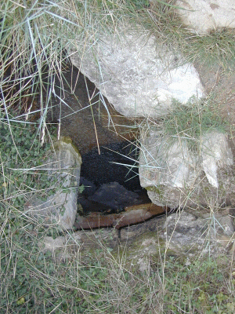

|

Un bâti rudimentaire protège la
vasque où l'eau sourd.
|
C'est dans la plaine alluviale qui borde la rive
droite de l'Allier, au pied du Puy St Romain,
qu'émerge la petite source du Sail. Très
salée (1,25g/l) ; elle est accompagnée d'un
pré salé qui présente des
variétés de plantes surprenantes.
Pour la trouver, prendre un chemin de terre,
à droite de la route qui va des Martres de Veyre
à Mirefleur après le lieu-dit "le Bateau". La
source se trouve à droite du chemin tandis que le
pré salé est à gauche.
|